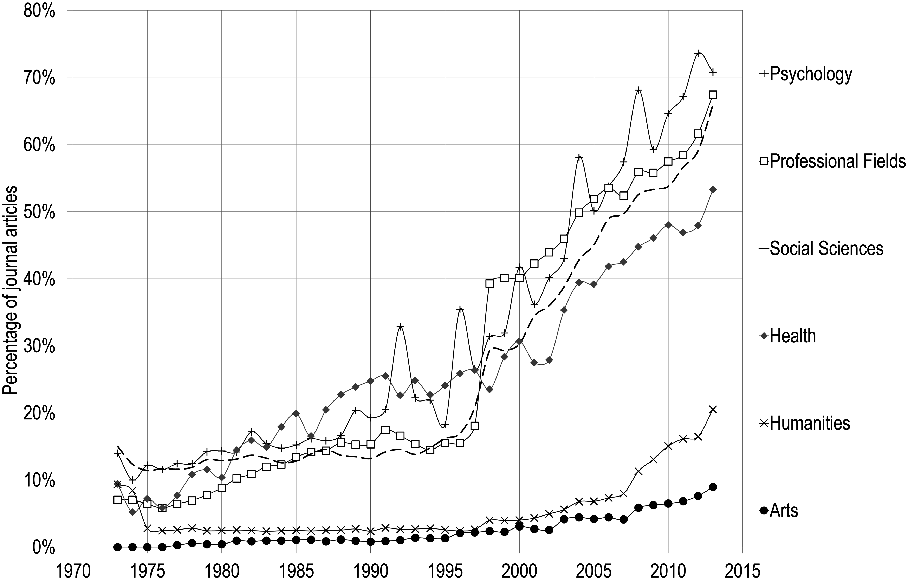
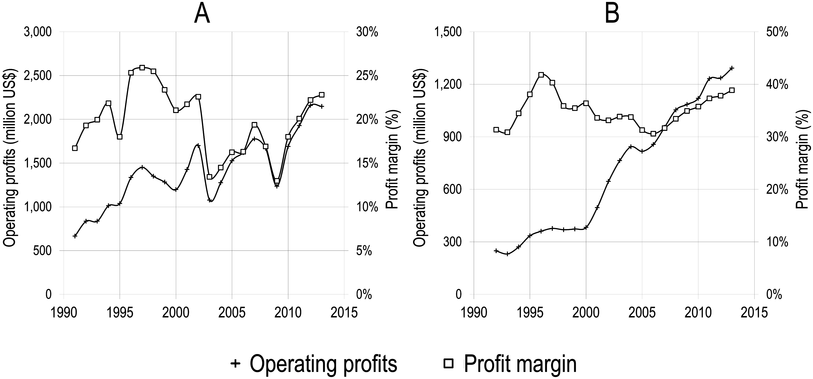

Nature just published five brief commentaries by statisticians on the reproducibility crisis:
As debate rumbles on about how and how much poor statistics is to blame for poor reproducibility, Nature asked influential statisticians to recommend one change to improve science. The common theme? The problem is not our maths, but ourselves.
The problem is ourselves, but it has little to do with: a failure to adjust for human cognition (Leek), relying on statistical “significance” (McShane and Gelman), failure to appreciate false positive risk (Colquhoun), or not sharing analysis and results (Nuijten) (although addressing all these things would be good). Goodman, who fingers academic norms, comes closest, but doesn’t identify the real culprit.
The problem, in a nut shell, is that empirical researchers have placed the fates of their careers in the hands of nature instead of themselves.
Let me explain.
Academic success for empirical researchers is largely determined by a count of one’s publications, and the prestige of the journals in which those publications appear (and the grants that flow from these). Prestigious journals, in turn, typically only publish papers that they deem to be reporting important new facts about the world.
In my field of anthropology, the minimum acceptable number of pubs per year for a researcher with aspirations for tenure and promotion is about three. This means that, each year, I must discover three important new things about the world.
Is that realistic?
Research outcomes are stochastic – if we knew with 100% certainty what the outcome would be, why research it? The whole point of research is learn something new. When researchers begin a study they have some level of uncertainty – perhaps great, perhaps small – about the outcome. We all hope for a sexy outcome, but we all know that we might not get it.
Let’s say I choose to run 3 studies that each has a 50% chance of getting a sexy result. If I run 3 great studies, mother nature will reward me with 3 sexy results only 12.5% of the time. I would have to run 9 studies to have about a 90% chance that at least 3 would be sexy enough to publish in a prestigious journal.
I do not have the time or money to run 9 new studies every year.
I could instead choose to investigate phenomena that are more likely to yield strong positive results. If I choose to investigate phenomena that are 75% likely to yield such results, for instance, I would only have to run about 5 studies (still too many) for mother nature to usually grace me with at least 3 positive results. But then I run the risk that these results will seem obvious, and not sexy enough to publish in prestigious journals.
To put things in deliberately provocative terms, empirical social scientists with lots of pubs in prestigious journals are either very lucky, or they are p-hacking.
I don’t really blame the p-hackers. By tying academic success to high-profile publications, which, in turn, require sexy results, we academic researchers have put our fates in the hands of a fickle mother nature. Academic success is therefore either a crapshoot or, since few of us are willing to subject the success or failure of our careers to the roll of the dice, a scam.
The solution is straightforward: Although we have almost no control over the sexiness of our outcomes, we have almost full control over the quality of our studies. We can come up with clever designs that discriminate among popular hypotheses. We can invent new measures of important phenomena, and confirm their validity, reliability and precision. We can run high powered studies with representative samples of key populations. We can use experimental designs. We can pre-register our hypotheses and statistical tests. In short, we need to change the system so academic researchers are rewarded for running high quality studies with these sorts of attributes, regardless of outcome.
Changing the incentives to reward high quality studies rather than sexy results would have enormously positive effects for science. Researchers will be able to respond to these incentives in ways that improve science while also advancing their careers. Under the current outcome-based incentives, in contrast, researchers often have little choice but to screw science to advance their careers.
Changing the incentive system won’t be easy. No longer will we be able to easily assess our colleagues based on their number of pubs, weighted by journal impact factors. Instead, we will have to assess them based on the quality of their studies: the importance of the question addressed, the sampling strategy and sample size, the measurements and their ability to discriminate among hypotheses, and the data analysis. All these will have to be recorded in detail, even if there were no sexy results.
Changing the incentive system might not only help solve the replication crisis, it might also help solve the serials crisis – the recent dramatic increase in the cost of subscribing to scientific journals.
Scientific publishing is an oligopoly. In the social sciences, 5 publishers – Elsevier, Taylor & Francis, Wiley-Blackwell, Springer, and Sage Publications – publish about 70% of all papers:

These publishers are exploiting their monopolies on journals and journal papers to charge high fees, which are mainly paid by university libraries. Reed-Elsevier’s profit margins, for example, exceed those of Apple, Google, or Amazon:

Student tuition, grant, and endowment dollars are being funneled to highly profitable corporations that add only questionable value to the science they publish.
Nature, a big money maker for Springer (one of the scientific publishing oligopolists), tapped 5 statisticians for comment because it is worried about the replication crisis, and with good reason. Nature, as we all know, is the king of kingmakers in science because it only publishes the sexiest of sexy results. Social scientists, myself included, crave a publication in Nature, which can make one’s scientific career. But if those results are often hacked and cannot be replicated, Nature’s status will plummet, and along with the profits it generates for Springer. Yet Nature and the statisticians seem completely oblivious to the irony that it is the prestige of publishing sexy results in high profile journals like Nature that is the central cause of the replication crisis.
Ultimately, though, we academic researchers are responsible for both the replication and serials crises because we created (or bought into) a system that rewards sexy results over quality measurements of the world.